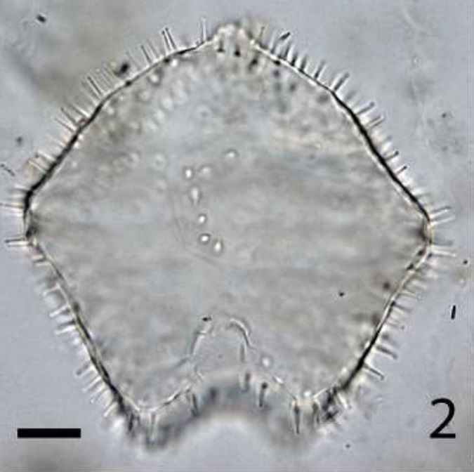
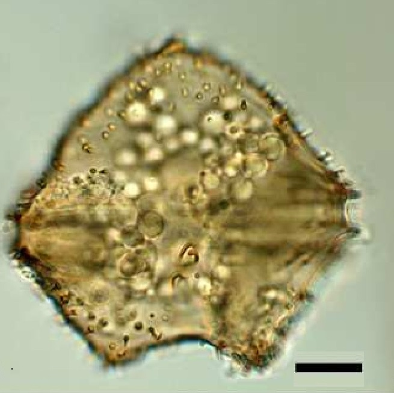

CYSTS LIST
- Alexandrium
- Archaeperidinium/RBSC
- Brigantedinium/Protoperidinium
- Diplopsalopsis/Protoperidinium
- Dubridinium
- Gymnodinium
- Impagidinium
- Lejeunecysta
- Nematosphaeropsis
- Peridinioids
- Polykrikos
- RBSC/Protoperidinium
- Selenopemphix
- Spiniferites
- Stelladinium
- Transparent/Hollow
- Transparent/Solid
- Transparent/Spherical
- Trinovantedinium
- Votadinium
TRINOVANTEDINIUM
Surface |
Shape |
Remarks |
Species |
Central body (um.) |
Image |
Transparent |
Pentagonal angularProcess length:5-7 um. |
TransparencyMinutely expanded acuminate processes along cingular margins |
Trinovantediniumapplanatum | 54 to 98 |
 |
SmoothLight brown |
PentagonalThickened apical and antapical hornsProcess length:1.4-2.8 um. |
Shorter sizeShorter processesColor |
Trinovantediniumpallidifulvum | 49.9 to 62.8 |
 |